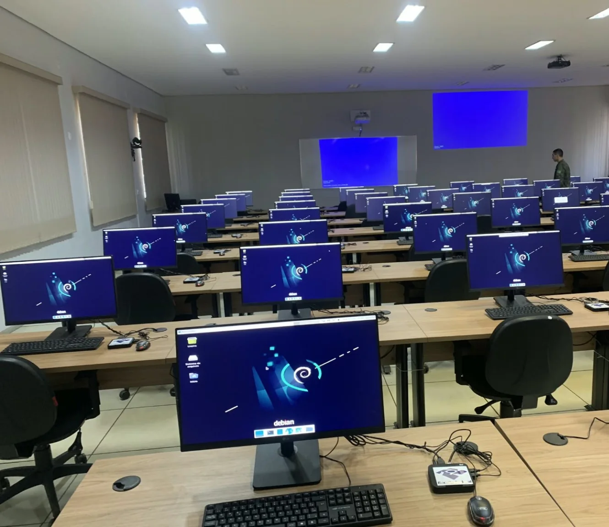
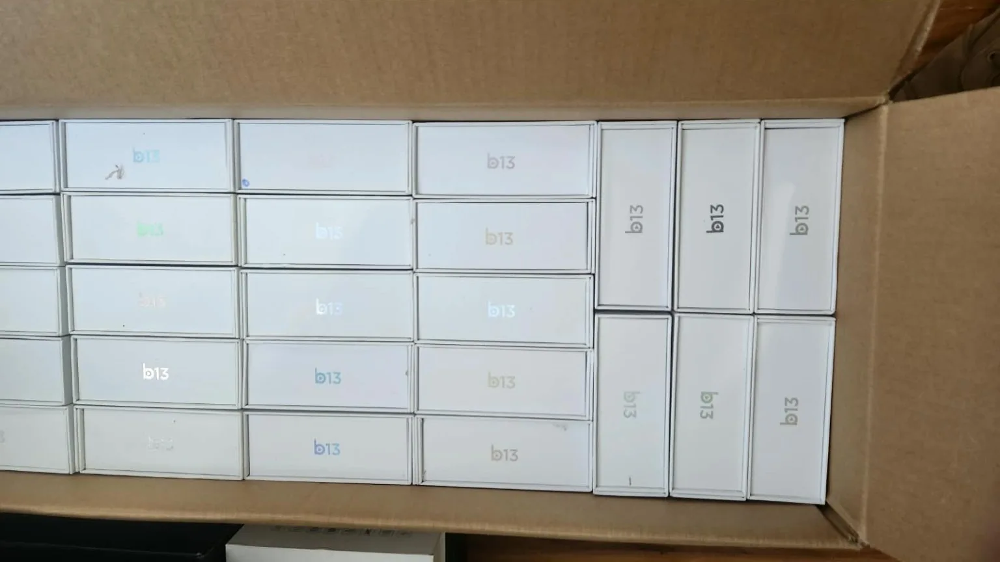
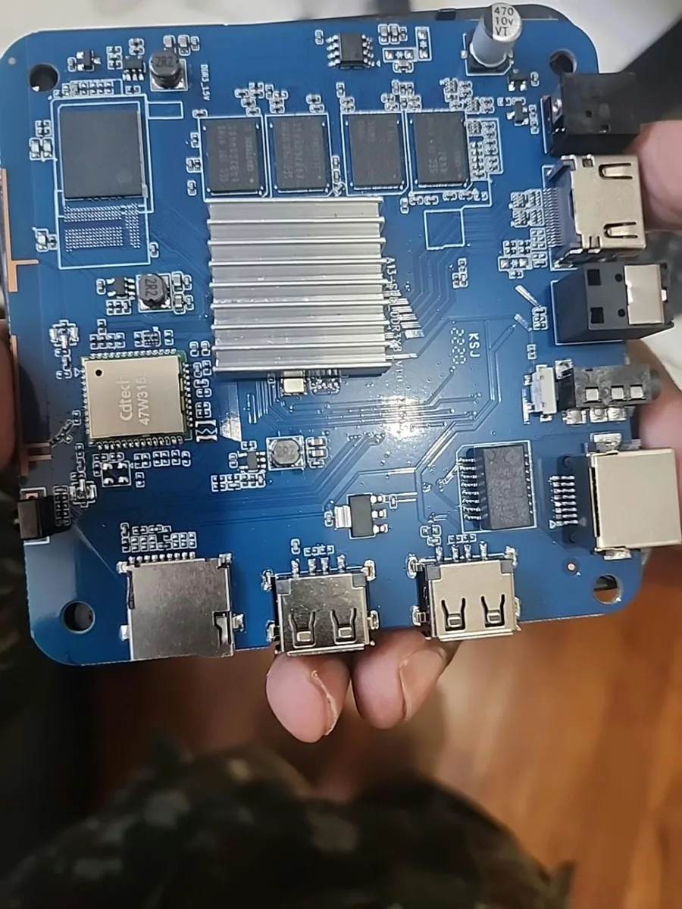
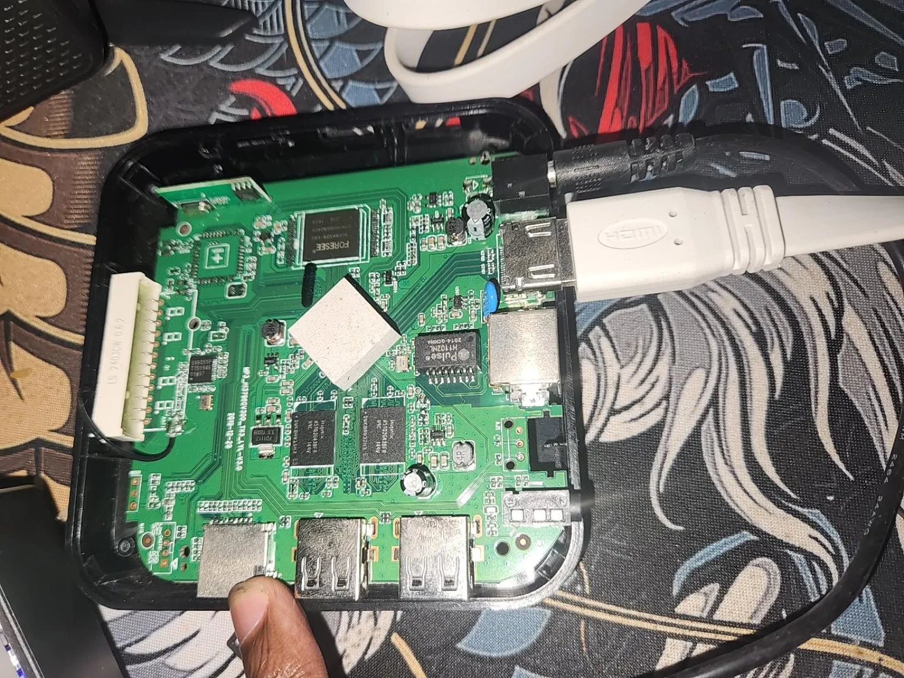
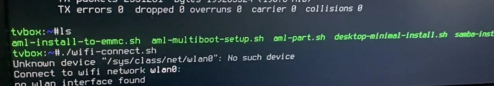
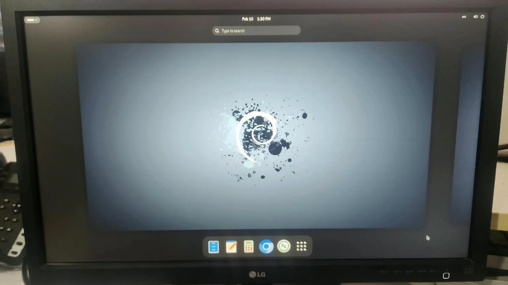
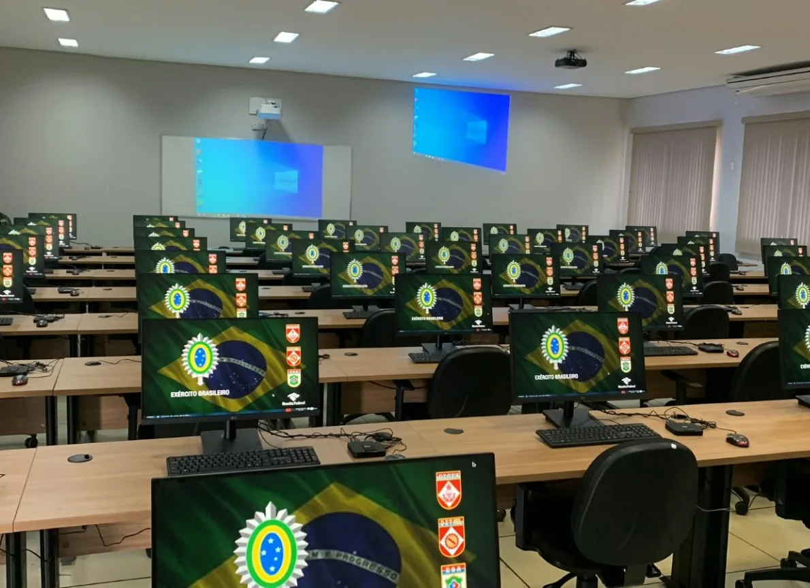
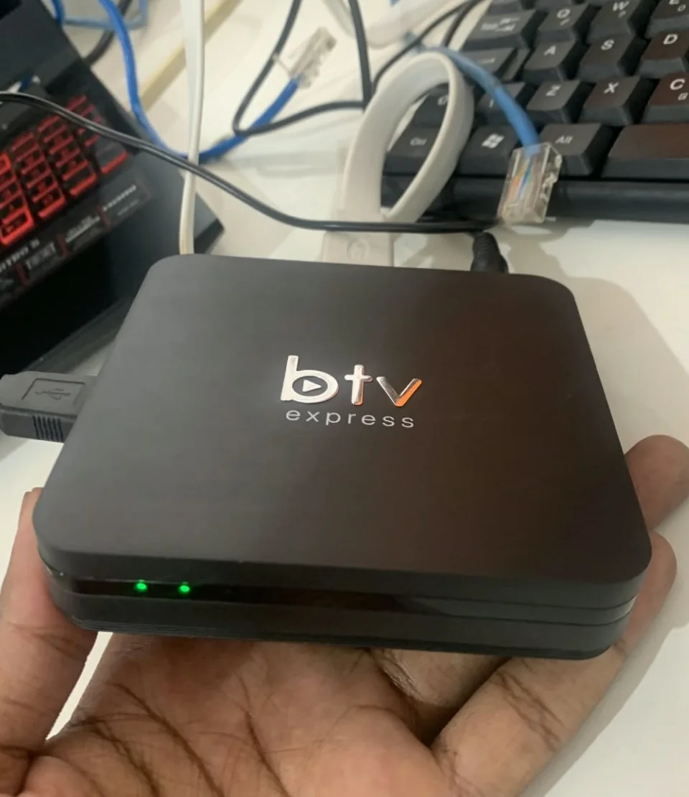

Sala
Vanguardeira.
Reaproveitamento tecnológico de TV Boxes ARM para compor estações Linux destinadas a atividades educacionais e de laboratório.
Projeto coletivo realizado em contexto institucional. Este estudo descreve apenas informações divulgadas na documentação pública, sem expor configurações internas.

TV Boxes adaptadas para uso educacional, conforme documentação do projeto
arquitetura utilizada nos dispositivos documentados
ambiente leve com Armbian e ferramentas de administração
Fonte: visão geral do projeto. Não há medição pública de economia, disponibilidade ou desempenho para apresentar como resultado.
O desafio
Viabilizar estações computacionais para atividades educacionais utilizando equipamentos de baixo custo e hardware reaproveitado. A proposta envolveu adaptar TV Boxes originalmente destinadas a outras finalidades para executar Linux e integrar um ambiente de laboratório.
As limitações eram concretas: processadores ARM, variações de placas e bootloaders, pouca memória RAM e compatibilidade variável de armazenamento e vídeo. Esse cenário exige validação de hardware e procedimentos de recuperação, não apenas a instalação de um sistema operacional.
Minha contribuição
Preparação e implantação
Participação nas atividades de preparação dos dispositivos, instalação e ajustes do Linux ARM, configuração de rede e testes funcionais, conforme as áreas de atuação registradas no repositório.
Suporte e validação
Apoio à identificação de incompatibilidades, aos procedimentos de recuperação e à manutenção das estações em ambiente educacional, considerando as limitações de hardware e de conectividade.
O projeto foi desenvolvido em equipe. Não atribuo a mim isoladamente a adaptação de todas as unidades ou decisões tomadas pelo grupo.
Da TV Box à estação Linux
A documentação técnica descreve um fluxo de instalação e manutenção para modelos da família RK322x, incluindo equipamentos MXQ 5G com memória limitada. Trata-se do procedimento registrado, não de garantia de compatibilidade com qualquer TV Box.
- Identificação do hardware: verificar plataforma, periféricos e compatibilidade da imagem Linux.
- Preparação e recuperação: utilizar Multitool e realizar backup da eMMC antes de modificá-la.
- Instalação: preparar o boot, gravar imagem compatível do Armbian e verificar a inicialização.
- Configuração: ajustar contas, serviços e aplicações leves para os recursos disponíveis.
- Rede e administração: priorizar Ethernet e utilizar ferramentas Linux, como SSH, para suporte.
- Validação: observar vídeo, conectividade, estabilidade e possibilidade de recuperação.
Problemas que exigem investigação
Boot e vídeo
Uma imagem incompatível ou DTB inadequado pode impedir a inicialização ou a saída HDMI. A documentação recomenda conferir a revisão do hardware, testar arquivos compatíveis e manter caminho de recuperação.
Armazenamento eMMC
Problemas de detecção e escrita podem envolver bootloader, revisão da placa ou kernel. O backup antes da gravação evita depender de uma instalação irreversível.
Memória e desempenho
Há dispositivos documentados com 1 GB de RAM. A escolha de desktop e aplicativos leves, redução de processos de fundo e cuidado com swap são práticas importantes; sem divulgar ganhos numéricos não medidos.
Rede e administração
Ethernet e SSH facilitam manutenção e diagnóstico, mas a documentação também registra desafios com drivers, DHCP, conectividade e diferenças entre dispositivos.
Referências: troubleshooting, hardware e otimização.
Documentação e galeria
Registros fotográficos reais da preparação das TV Boxes, testes e ambiente de laboratório. As imagens foram otimizadas e tiveram metadados removidos. A participação foi coletiva; as fotos não substituem a documentação técnica.







Veja também a galeria de bastidores técnicos. As imagens não mostram topologias internas, credenciais ou endereços de serviços.
O que foi entregue
Resultado documentado: mais de 60 dispositivos foram adaptados para estações Linux destinadas a usos educacionais e de laboratório, segundo o README público.
Limites da evidência: não há, no material consultado, auditoria independente, taxa de sucesso por dispositivo, custos comparativos ou benchmark de desempenho. Portanto, não atribuo economia percentual nem disponibilidade medida.
Evolução planejada: padronização adicional de implantação, automação de atualizações e ampliação da documentação aparecem no roadmap; não são apresentados como funcionalidades já concluídas.
O que este projeto demonstra
Participar do reaproveitamento de hardware em escala exige mais do que conhecer comandos Linux. Envolve avaliar compatibilidade, estabelecer processos de recuperação, configurar sistemas enxutos, investigar falhas e colaborar para que equipamentos limitados possam atender uma necessidade real.
Este estudo evidencia competências de infraestrutura Linux, sistemas embarcados, implantação, rede e diagnóstico técnico, com documentação pública do processo e distinção clara entre entregas e melhorias futuras.